Rodando desde Cármenes
Pasión por las dos ruedas, sin importar el estilo. Un espacio de encuentro para moteros de La Mediana.
El Club
Multiestilo
Tal como representa nuestro logo, en el club hay espacio tanto para maxi-trails preparadas para la aventura como para scooters. Nos une la carretera, no el tipo de motor.
Nuestra Base
Operamos desde Cármenes, el enclave perfecto para iniciar cualquier trazado hacia los puertos de montaña o descender hacia los valles.
Rutas por Los Argüellos
Nuestra ubicación nos permite planificar rodadas espectaculares aprovechando la red de carreteras secundarias de la comarca de Los Argüellos y todo el norte de León. Priorizamos rutas donde el trazado curvo y el paisaje aporten valor al grupo.
Salidas Oficiales
Programadas mensualmente. El ritmo siempre se adapta al grupo, asignando un guía (Road Captain) y una moto de cierre para garantizar que el pelotón circule compacto y seguro.
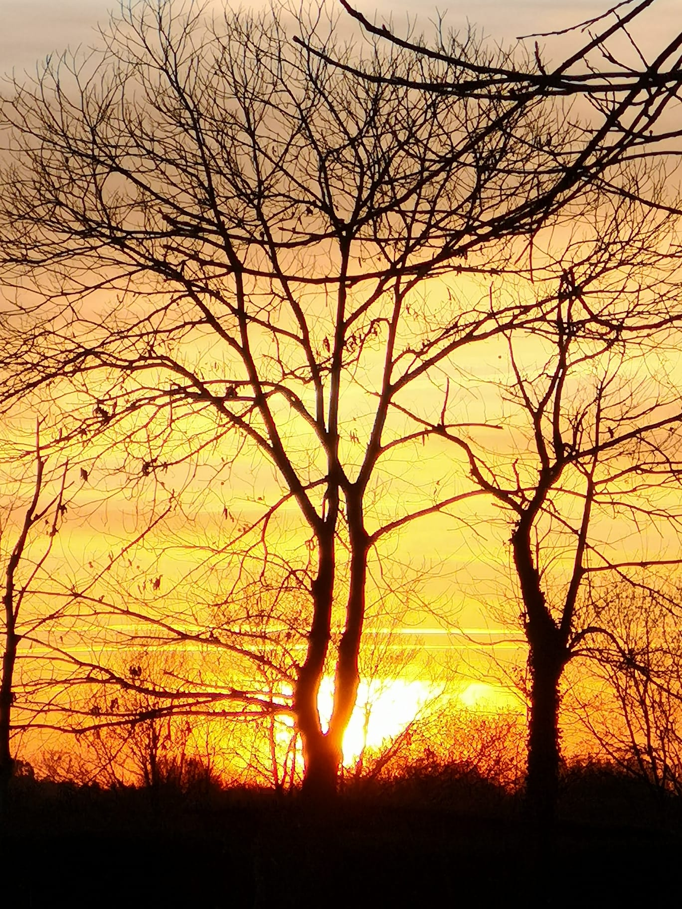
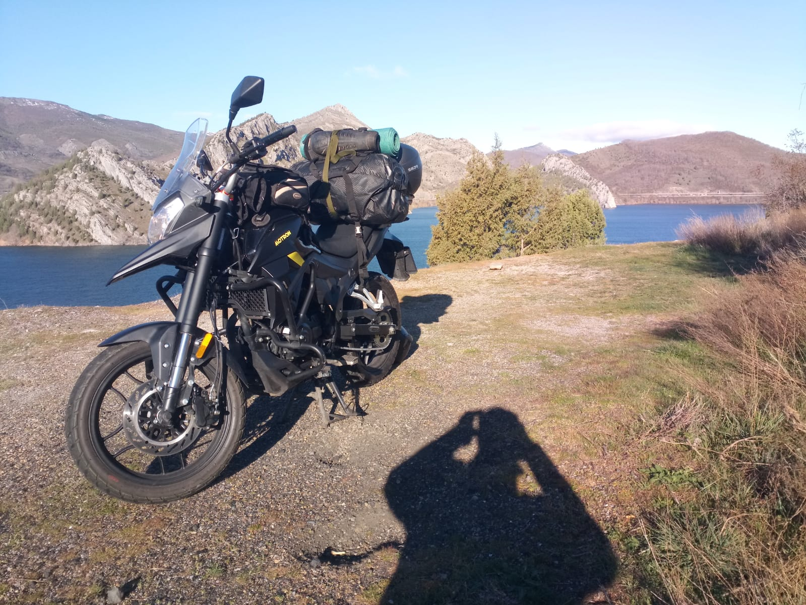
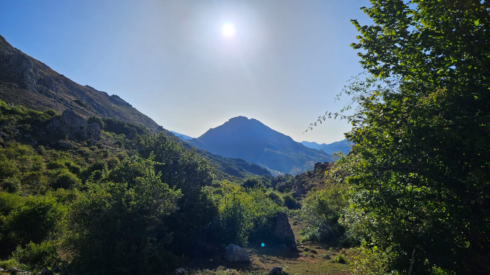
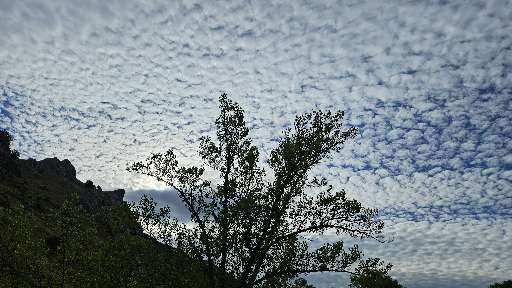
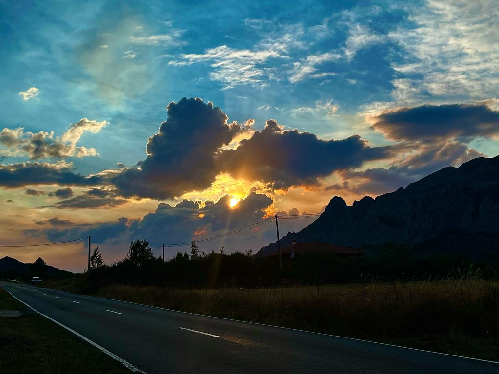
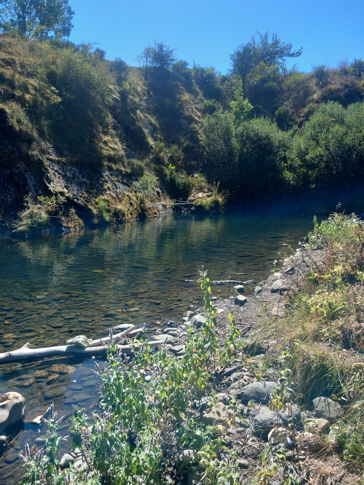
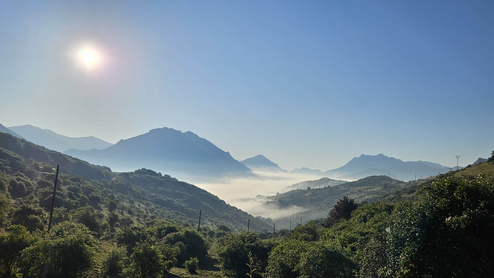
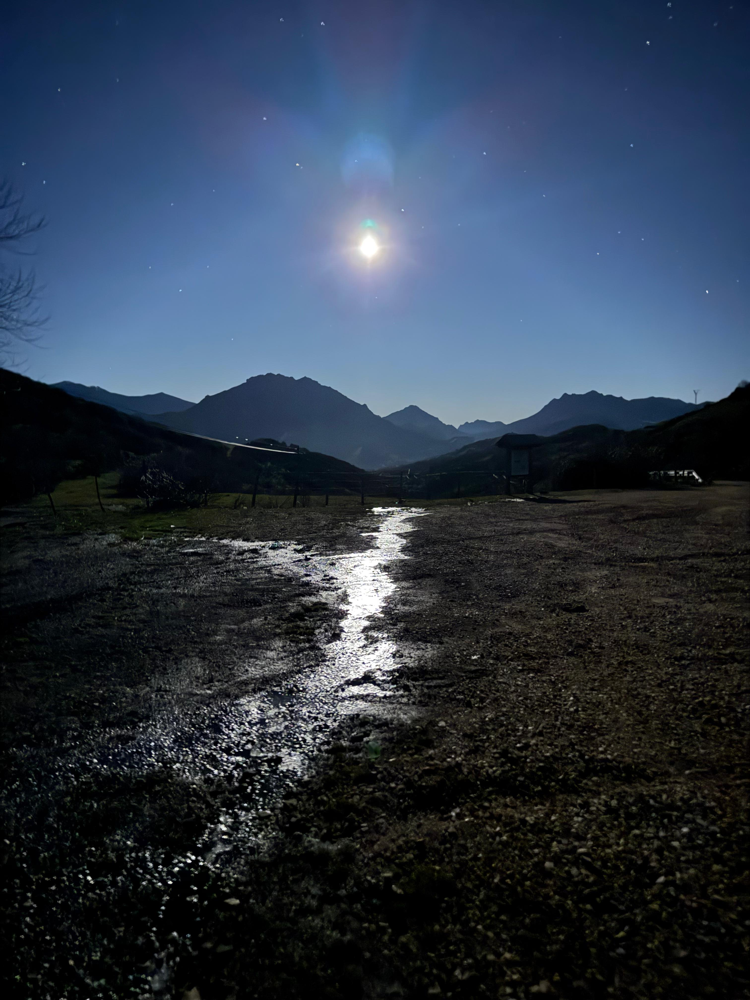
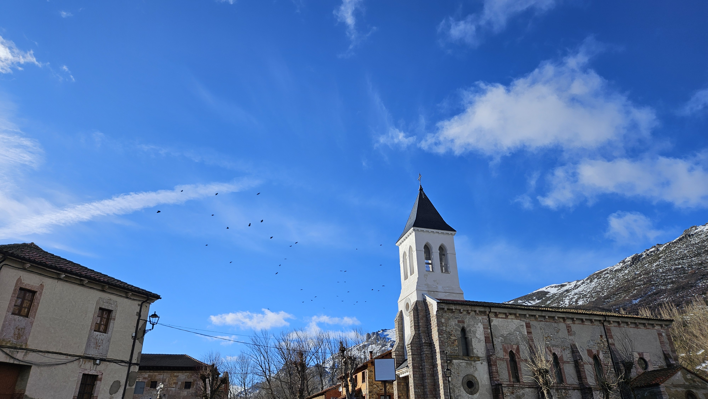
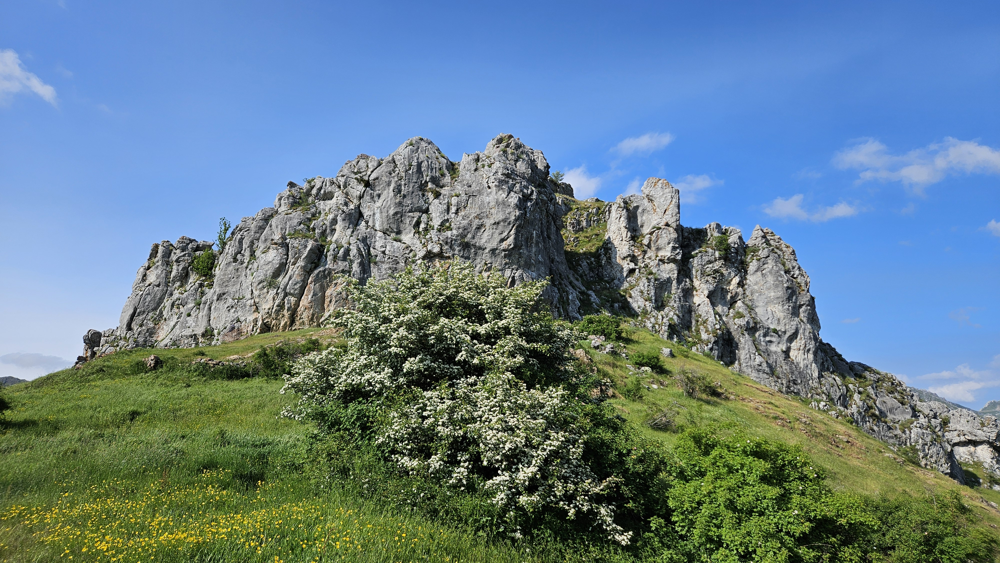
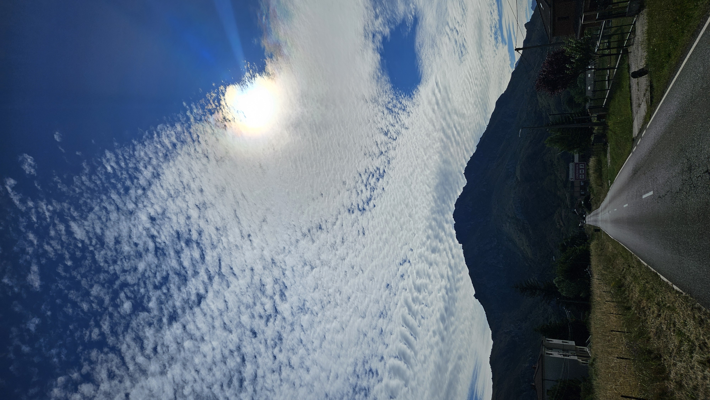


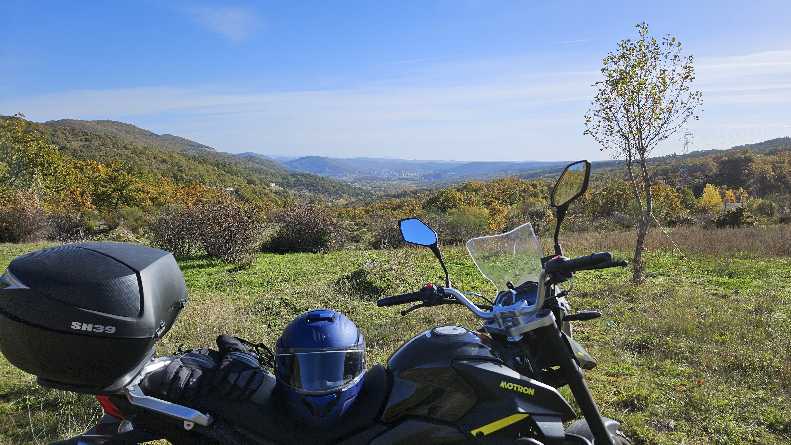

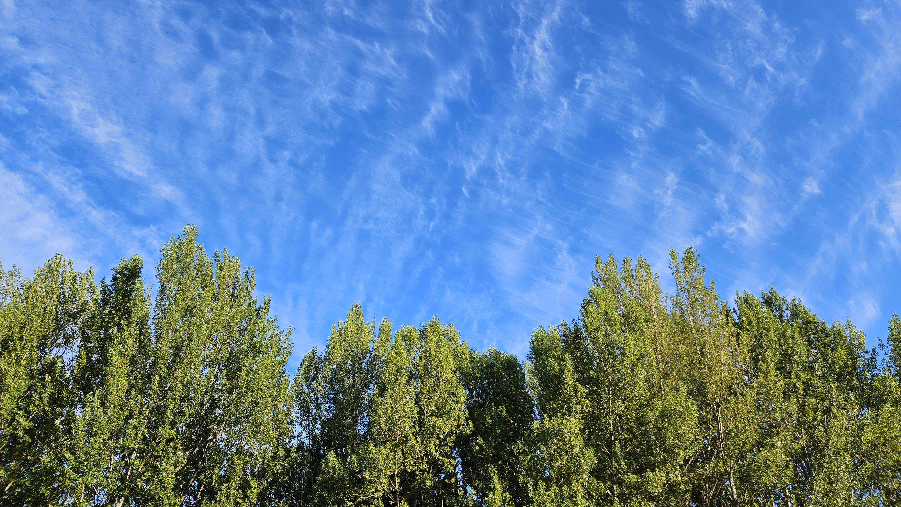
Contacto y Ubicación
Para unirte a las próximas salidas, consultar horarios o conocer a los miembros del club, envíanos un correo a:
info@clublamediana.es